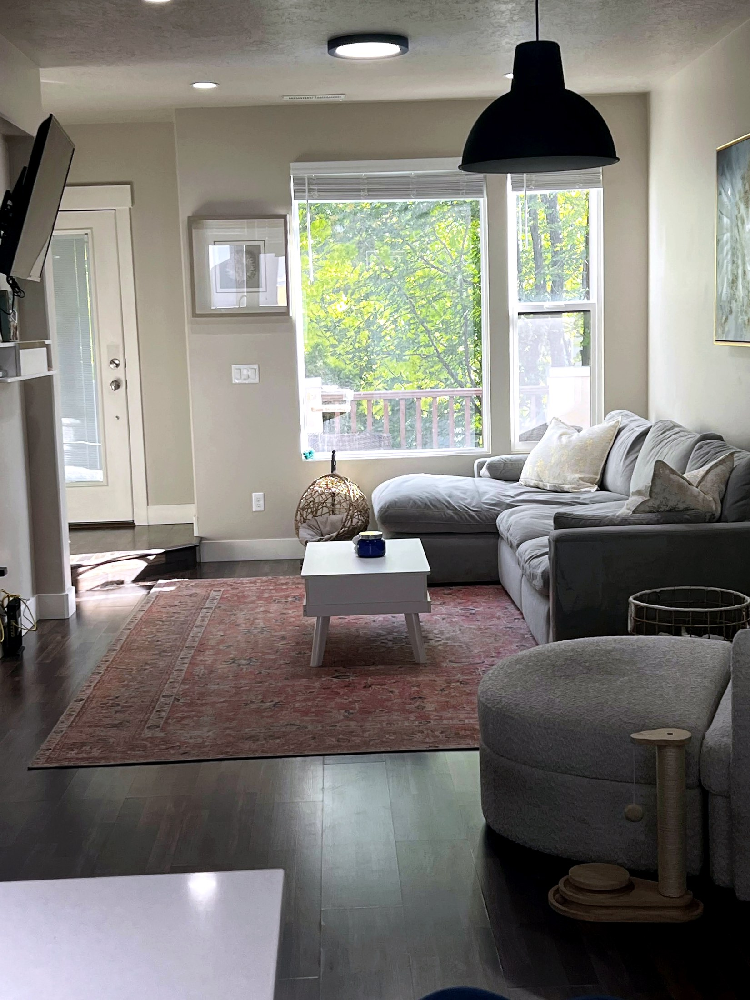
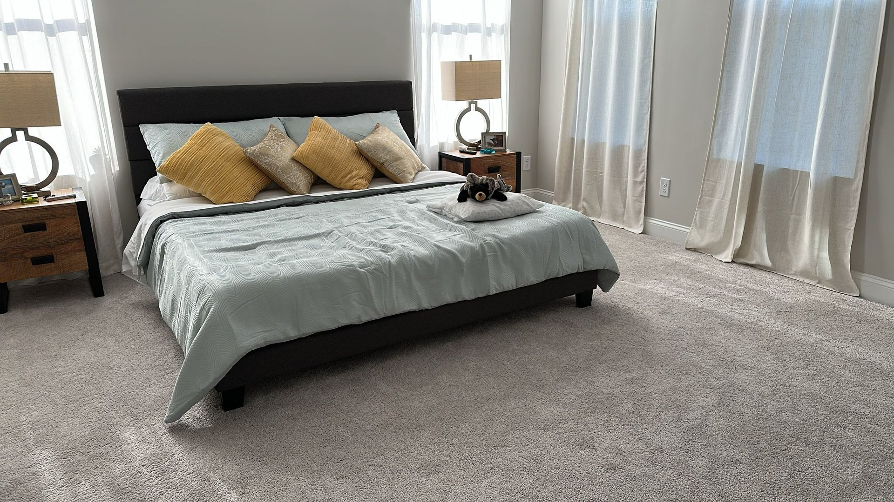
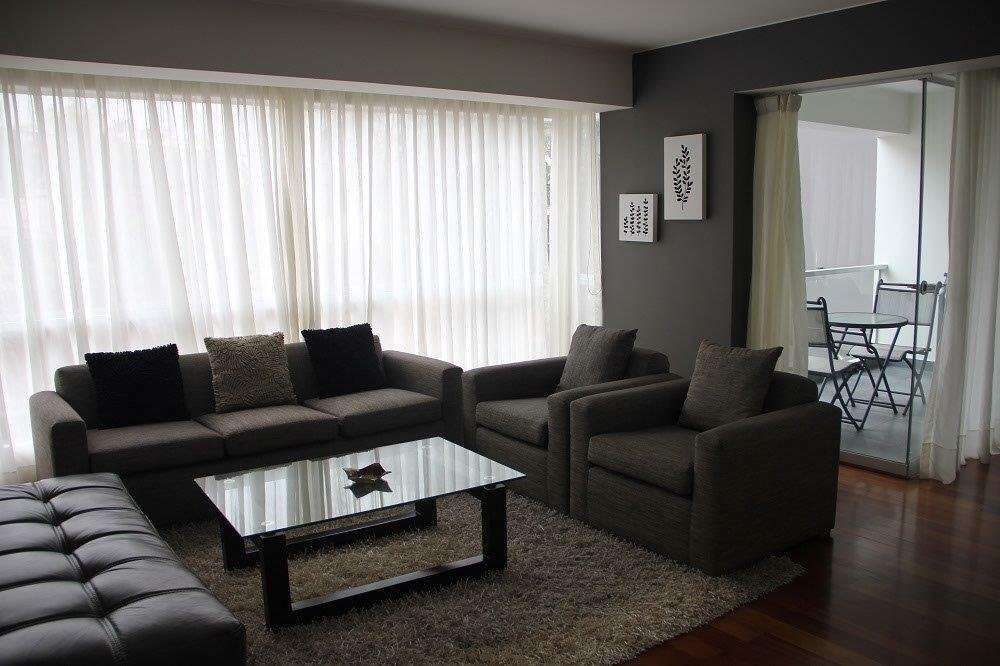
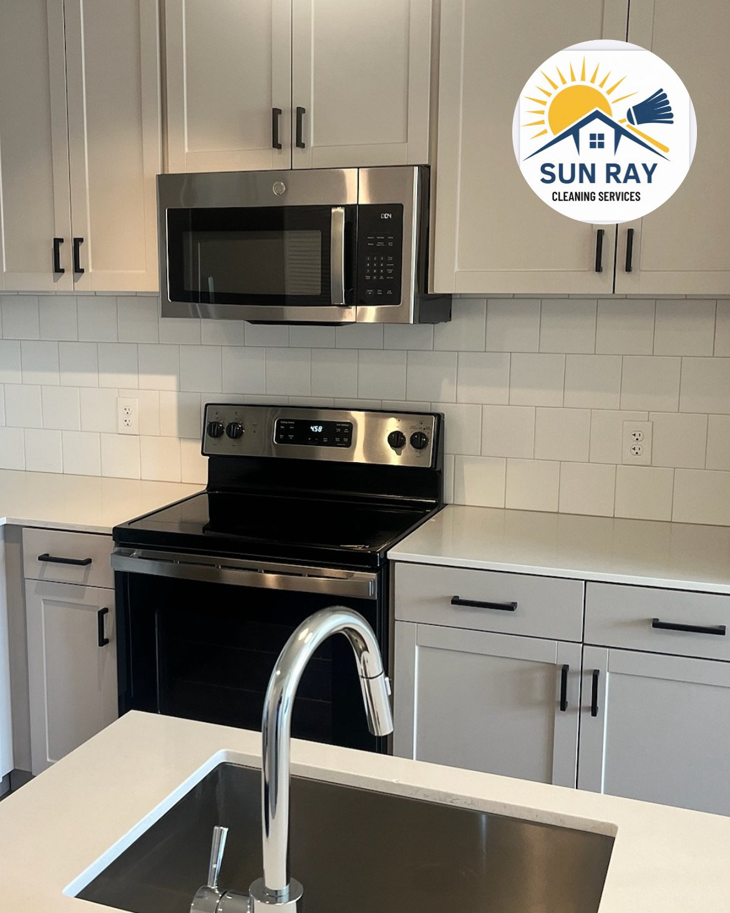
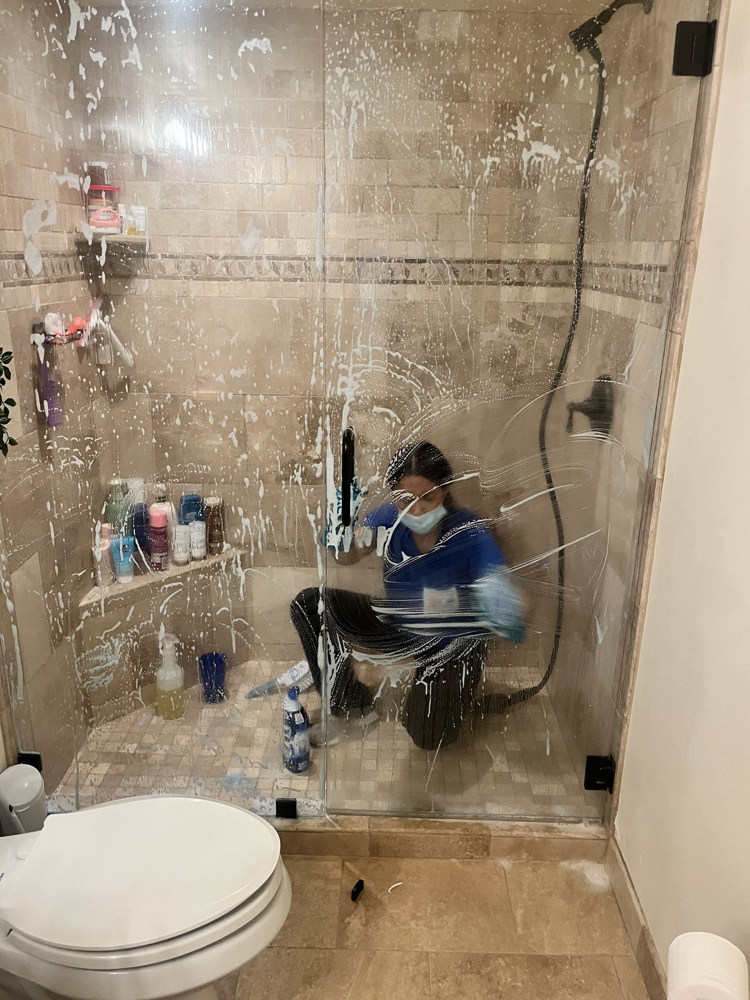
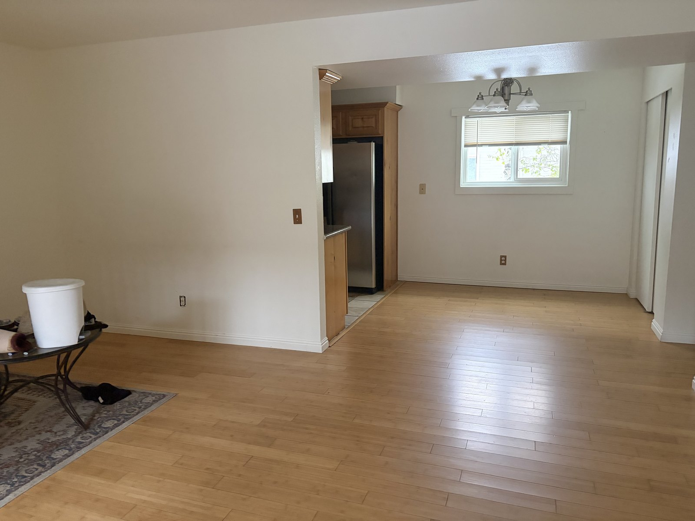
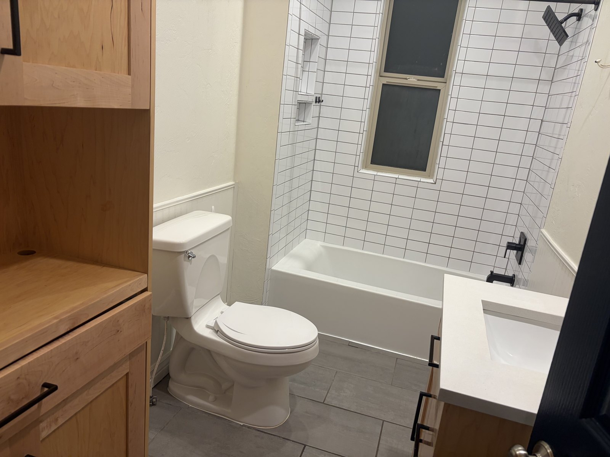
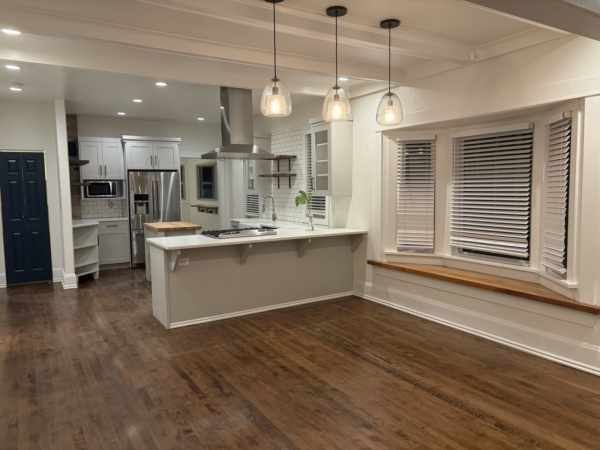

Sun Ray made our place feel fresh, calm and ready again. Communication was easy and the quote was clear.Park City homeowner
Sun Ray Cleaning blog
Local cleaning guides for Utah homeowners and hosts.
Practical advice for Airbnb turnovers, deep cleans, move cleaning, pricing, seasonal resets and local service areas around Park City, Heber City, Midway, Kamas and nearby mountain communities.

Featured local cleaning guides
Cleaning guides for Park City, Heber City, Midway, Kamas and nearby service areas.
Start with the services and locations homeowners, hosts, second-home owners, and property managers ask about most often.

Airbnb/VRBO
Airbnb Cleaning vs Turno Cleaners in Park City
How local turnover cleaning compares with marketplace cleaners when guest timing, property access and consistency matter.
Read guide
Airbnb/VRBO
Behind the Scenes: Peak Summer Turnover Season in Park City
How Sun Ray Cleaning coordinates back-to-back summer vacation rental turnovers across Park City, Heber City, Midway and nearby mountain communities.
Read guide
Local areas
Cleaning Services in Midway, Utah
How Sun Ray Cleaning helps Midway homeowners, vacation rental hosts and seasonal property owners keep Heber Valley homes guest-ready year-round.
Read guide
Moving
Move-In & Move-Out Cleaning in Park City and Heber Valley
What professional move-in and move-out cleaning covers, why it matters for deposits and sales, and how mountain homes need extra attention.
Read guideAirbnb/VRBO
Summer Rental Season Prep Checklist for Park City & Heber Valley
A practical cleaning checklist for vacation rental owners heading into peak summer bookings, quick turnovers and guest-ready expectations.
Read guide
Deep cleaning
Hard Water Cleaning Tips for Park City & Summit County Mountain Homes
Park City and Heber City homes battle hard water deposits year-round. Practical tips for removing mineral buildup from showers, faucets and tile.
Read guide
Airbnb/VRBO
Airbnb Cleaning Between Same-Day Turnovers: A Park City Host's Playbook
How to manage same-day Airbnb and VRBO turnovers in Park City — cleaning priorities, team coordination, checklists and contingency plans for tight windows.
Read guide
Airbnb/VRBO
Canyons Village and Kimball Junction: Short-Term Rental Cleaning Guide
Turnover cleaning guide for Canyons Village resort condos and Kimball Junction vacation rentals in Park City — tight windows, resort standards, local tips.
Read guide
Recurring cleaning
Eco-Friendly Cleaning Options for Park City and Heber Valley Homes
Green and pet-safe cleaning options for Park City and Heber Valley homes — what works at altitude, what to avoid, and how to go eco-friendly without compromise.
Read guideDeep cleaning
Hard Water Cleaning Tips for Summit County and Wasatch County Homes
How to remove hard water stains, descale fixtures and prevent mineral buildup in Summit County and Wasatch County mountain homes.
Read guideRecurring cleaning
How to Choose a Recurring Cleaning Service in Park City
What to look for when hiring a recurring house cleaning service in Park City — scheduling, pricing, communication and local experience that matter most.
Read guide
Local areas
Jordanelle and Deer Creek Cabin Cleaning for Weekend Owners
Cleaning guide for Jordanelle and Deer Creek cabin owners — seasonal dust, lake recreation wear, weekend arrival prep and closing routines.
Read guide
Local areas
Kamas and Oakley Home Cleaning: Serving Eastern Summit County
Home cleaning services for Kamas, Oakley and eastern Summit County — ranch properties, well water homes, seasonal cabins and rural mountain living.
Read guideLocal trust
Why Local Cleaning Services Beat National Apps in Park City
Why local cleaning companies outperform national booking apps in Park City — consistency, local knowledge, accountability and better results for mountain homes.
Read guideLocal areas
Midway Cleaning Services: What Homeowners in the Heber Valley Should Know
Local cleaning guide for Midway and Heber Valley homeowners covering recurring, deep, and seasonal cleaning for mountain homes near Deer Creek and Homestead.
Read guideMoving
Move-In Cleaning Checklist for New Heber City and Midway Residents
Move-in cleaning checklist for Heber City and Midway — what to clean before unpacking, local hard water considerations, and new construction dust tips.
Read guide
Deep cleaning
Post-Construction Cleaning for New Builds in the Heber Valley
Post-construction cleaning for new homes in Heber City, Midway and the Heber Valley — removing builder dust, protecting finishes and getting move-in ready.
Read guideSeasonal care
How to Prepare Your Park City Home for Winter Rental Season
Get your Park City vacation rental ready for ski season bookings — pre-season deep clean, winterization checklist, and turnover prep for busy months.
Read guide
Service comparison
Recurring vs. Deep Cleaning: Which Service Does Your Home Need?
Recurring cleaning vs deep cleaning — what each includes, when you need which, and how to combine both for a consistently clean mountain home.
Read guide
Seasonal care
Summer Entertaining Prep: Getting Your Mountain Home Guest-Ready
How to prep your Park City, Heber City or Midway mountain home for summer guests — kitchens, guest rooms, outdoor spaces and everything hosts forget.
Read guideAirbnb/VRBO
Ultimate Vacation Rental Cleaning Checklist for Utah Mountain Properties
Complete turnover cleaning checklist for Airbnb, VRBO and vacation rental properties in Park City, Heber City, Midway and Utah mountain communities.
Read guideDeep cleaning
What Does a Deep Clean Include? A Room-by-Room Breakdown
What a professional deep clean covers room by room — kitchen, bathrooms, bedrooms, living areas and utility spaces explained for Utah mountain homes.
Read guideSeasonal care
Spring Cleaning Guide for Park City Mountain Homes
A room-by-room spring cleaning checklist for Park City, Heber City, and Midway mountain homes after ski season.
Read guideAirbnb/VRBO
Complete Guide to Airbnb & VRBO Cleaning in Park City
A practical turnover guide for Park City owners and hosts who need reliable guest-ready cleaning.
Read guidePricing
How Much Does Airbnb Cleaning Cost in Park City?
What affects turnover pricing, from beds and baths to laundry, supplies, and same-day windows.
Read guideDeep cleaning
Post-Ski-Season Deep Clean Checklist for Park City Rentals
A room-by-room checklist for removing winter grit, dust, and guest-season buildup.
Read guideLocal areas
Red Ledges Home Cleaning: A Guide for Luxury Heber Homeowners
How to plan detail-focused cleaning for Red Ledges homes, second homes, and golf properties.
Read guideMoving
Heber City Move-In/Move-Out Cleaning: What New Residents Should Know
A move-clean checklist for buyers, sellers, renters, landlords, and agents in Heber City.
Read guideSeasonal care
Getting Your Park City Home Ready for Summer Guests
How to reset kitchens, patios, bathrooms, and guest spaces before summer travel season.
Read guideLuxury homes
Deer Valley Luxury Home Cleaning Standards Explained
A local guide to detail, discretion, and guest-ready care for Deer Valley homes.
Read guideAirbnb/VRBO
Jordanelle Vacation Rental Turnover: What Lakeside Owners Need
Cleaning priorities for Jordanelle vacation rentals, lake weekends, and tight guest turns.
Read guideBrowse by topic
Find the right guide faster.
Airbnb/VRBODeep cleaningMove-in/out cleaningPark CityHeber CityMidwayKamasSummit CountyWasatch CountyPricingSeasonal care
Service area map
Cleaning service across Summit and Wasatch County.
Sun Ray focuses on Park City, Heber City, Midway and nearby mountain communities where local schedules, weather, vacation homes and guest turnovers need reliable cleaning support.
Summit CountyWasatch County
Customer testimonials
Warm, reliable cleaning homeowners can feel good about.
Preview testimonial language for the GPT redesign. Replace with approved Google or Webflow reviews before production publishing.
The team understood the turnover window and left the home guest-ready. It was exactly the kind of detail we needed.Short-term rental host
Reliable, friendly and thorough. The house looked great before family arrived for the weekend.Heber Valley homeowner
Cleaning FAQs
Questions before you book.
What areas does Sun Ray Cleaning serve?
Sun Ray Cleaning serves Park City, Heber City, Midway, Summit County, Wasatch County and nearby Utah mountain communities.
Can I request a quote online?
Yes. Use the quote form on this preview page or contact Sun Ray by phone or text at (801) 604-2189 with your home size, location, service type and timing.
Do you offer recurring, deep, move and Airbnb cleaning?
Yes. Sun Ray provides recurring cleaning, deep cleaning, move-in and move-out cleaning, and Airbnb/VRBO turnover cleaning.
Have a cleaning question?
Ask Sun Ray for a quote or recommendation.
Share the home location, service type and timing, and we will point you in the right direction.